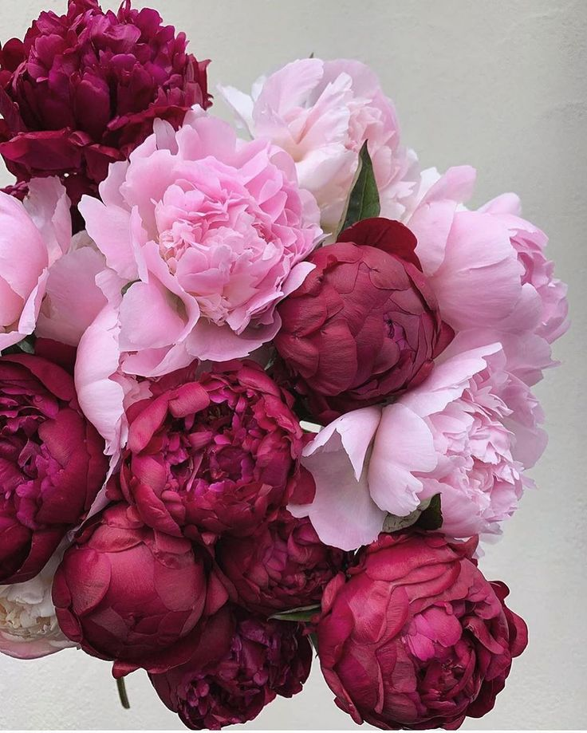

Bujorii (Paeonia) sunt plante perene apreciate pentru florile lor mari, parfumate și bogat colorate. Originari din Europa, Asia și America de Nord, bujorii au flori în nuanțe de roz, roșu, alb și galben. Aceste plante preferă soluri fertile, bine drenate și expunere la soare. Bujorii sunt populari în grădini și aranjamente florale datorită frumuseții și longevității lor. În simbolistică, bujorii reprezintă prosperitatea, onoarea și norocul.
